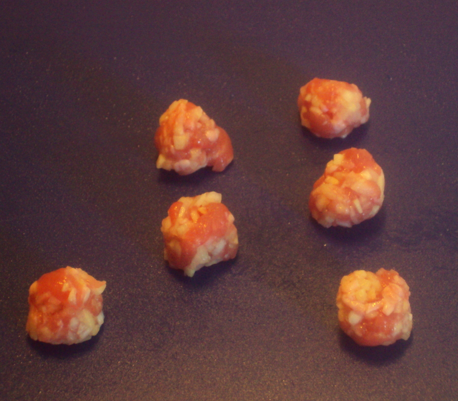
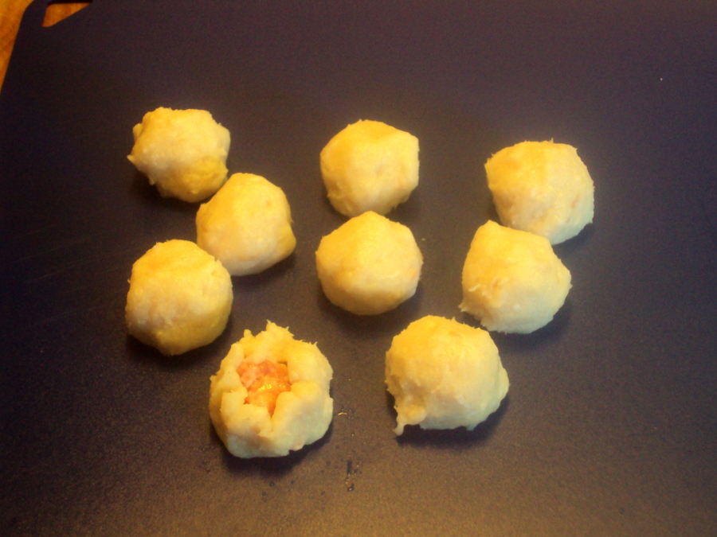

SOPA DE ALBÓNDIGAS DE PESCADO (CHINA)
Ingredientes
- 200 g de pescado blanco sin piel ni espina pescadilla, lenguado
- 50 g de papada o tocino fresco
- 1 clara de huevo o 35 g de clara
- 30 ml de vino de arroz
- Sal, pimienta
- 75-100 g de lomo de cerdo
- 1/2 cuch de cebolleta picada
- 1/2 cuch de jengibre fresco picado
- 4-5 gotas de aceite de sésamo
- 1/2 cuch de salsa de soja
- Sal, pimienta
- 400 ml de caldo de pollo
- 75 ml de vino de arroz
- 75 g de hojas tiernas, espinacas, remolacha, acelga roja, mostaza

En las tiendas de alimentación chinas venden estas albóndigas de pescado ya preparadas. Creo que hacerlas es mucho mejor y hasta divertido. La masa de pescado, que también se llama farsa, es, desde el punto de vista técnico, la misma que la propia para preparar quenelas y rellenos de carnes o pescados para que suban en el caldo o en el horno en forma de muselinas suaves y ligeras. La nata habitual en las europeas es en la técnica china papada o tocino de cerdo. En realidad ambos ingredientes son lo mismo: Grasa combinada con líquido que con las claras de huevo y el pescado o la carne, liga la masa dándole cuerpo y suavidad en la cocción. En lo demás son muy semejantes. En la cocina china se preparan otras «muselinas» o farsas de este estilo también con mariscos, se cuecen a veces al vapor en unos pequeños moldes de porcelana, pero en el fondo son lo mismo que estas albondiguitas.
La historia de la cocina y los viajes de las técnicas culinarias y de los platos siempre guardan sorpresas agradables para los estudiosos de estos temas de la gastronomía. En la tesis doctoral del luego profesor Ambrosio Huici Miranda, que la tituló «Traducción española de un manuscrito anónimo del siglo XIII sobre la cocina hispano-magribí» y se publicó en la Universidad de Madrid en 1966, aparece en la página 80 una receta titulada por el traductor «Migajón de pescado«.

Siento que la foto es muy mala, pero se puede leer, que es lo que de verdad interesa. Esta receta y todas las que le siguen de confección semejante me supusieron un quebradero de cabeza durante años, hasta que comprendí que lo que el autor anónimo cita como «un poco de levadura» no es, ni mucho menos, el hongo de la Saccharomyces cerevisae o una masa de harina contaminada por el mismo. No. Mi mente comenzó a ver algo claro al leer y releer en la página 43 de la misma tesis el título de un capítulo. «Noticia de los cuajados y los fermentados: Receta de la zirbaȳa«, al que siguen, al estilo de los textos árabes, recetas variadas de carnes, como la zirbaȳa, y de pescados, en los que la carne de aves o ternera y los pescados se cocinan en piezas o enteros en salsas con lácteos o con ellos, o con leche de almendras, que no sé si entonces se fermentaba también. El autor anónimo nos cuenta en su introducción al capítulo los beneficios de cocinar con los fermentados, que cita como levaduras en la mayoría de las recetas, para la salud, pero yo no comprendía nada, ¿con levadura? Era un disparate entonces, en el siglo XIII, y ahora, en el siglo XXI, que ninguna persona dedicada a la cocina con dos dedos de frente cometería.
Me resulta increíble que casi nunca observemos los hechos culinarios del pasado sin eliminar de nuestra mente al hacerlo todas las mejoras técnicas de las que disfrutamos y que se han desarrollado a lo largo del siglo XX y de éste en el que estamos.Es esta incapacidad la que nos hace tan difícil comprender el pasado. Se verá a continuación.
Gracias a mis lecturas repetidas y machaconas, muy machaconas, por cierto, de los textos –de éste de Andalucía occidental, del de Ibn Razín, «El relieve de los manteles», de Andalucía oriental, de otros de cocina del mundo árabe medieval– al fin se me encendió una luz en la sesera y relacioné el hecho de que no hubiera frigoríficos en el siglo XIII –el texto de Huici Miranda es de 1212 y el de Ibn Razín, de antes de 1250, creo recordar– con el de que la única forma de conservar la leche, la nata y otros lácteos entonces fuera mediante la fermentación apenas era ordeñada o separada la nata de la leche. Cuando se necesitaba un lácteo sin fermentar, en todas las recetas de entonces, de Ruperto de Nola, de Martínez Montiño y de todos los recetarios hasta el siglo XX, se indica leche recién ordeñada.
¡Cuajados, fermentados, qué alegría inmensa cuando me di cuenta! Descubrí, por fin, después de tantos esfuerzos, que el migajón de pescado –no digo que el traductor no fuera fiel al texto, pero para un plato de cocina el título es … poco afortunado– es una mousseline de pescado. ¡La cocina francesa es única en la nomenclatura, hay que reconocerlo!
Tampoco puedo afirmar que la técnica para hacer muselinas de carnes o pescados molidos en el mortero y batidos con clara y con nata o grasa de cerdo viajara desde el Mediterráneo al Lejano Oriente o fuera lo contrario, que llegó a nuestro mundo desde la China ni en qué época. Esa es una incógnita a despejar en este asunto de los viajes de los platos de cocina, que es apasionante.
De todos modos los lectores tienen un ejemplo de otra muselina al estilo europeo o mediterráneo de pescado moderna en esta receta. ¡Seguimos cocinando lo mismo que se hacía a principios del siglo XIII!
Ahora sí, después del rollo que les he dado, les puedo asegurar que esta sopa es deliciosa, refinada, siempre mejor con el caldo de ave que con otro y un plato de lo más espectacular.
Comenzar por preparar la farsa de pescado. En una trituradora convertir en pasta el pescado en trozos con la papada picada. Añadir un poco de sal y los 30 ml de vino con casi toda la clara de huevo y volver a poner en marcha la trituradora, hasta que la masa de pescado y panceta absorba los líquidos.

Si aún está suelta, que se disgrega, añadir la totalidad de la clara o un poco más, hasta que se convierta en una masa maleable y tierna, pero no líquida ni que escurra. Poner en marcha otra vez durante unos segundos. Sacar de la trituradora la masa y dejarla en un recipiente en la parte más fría del frigorífico.
Picar muy fina la carne de lomo de cerdo. Picar muy fina la cebolleta, el jengibre y amasar todo junto con la carne y un poco de sal y pimienta, el aceite de sésamo y la salsa de soja hasta formar una masa uniforme. Dividir esta masa en 10 albondiguitas muy pequeñas y bien redondeadas y dejar en espera.

Retomar la farsa de pescado bien fría y dividirla en 10 porciones iguales. Formar bolitas con cada una de ellas. Tomar una bolita y aplastarla en la palma de la mano hasta formar una torta un poco más pequeña que la palma.


Colocar en el centro una de las albondiguitas de lomo de cerdo picado y encerrarla en la farsa de pescado. Hacer girar la albondiguita de pescado entre las palmas humedecidas con agua hasta redondearla bien. Repetir la operación con las otras 9 porciones.

Acercar al calor el caldo de pollo con el vino –75 ml– y comprobar el punto de sal, para rectificar si hace falta. Cuando llegue al hervor, introducir las albondiguitas. Cuando rompa el hervor de nuevo, espumar con un colador.


Añadir entonces las hojas tiernas verdes y dejar en hervor suave, a fuego bajo, como 5-6 minutos o hasta que las albondiguitas comiencen a flotar, resistan una presión ligera de los dedos pero no lleguen a estar duras ni como goma, más bien tiernas, suaves, como una muselina, tal como se observa en la fotografía inferior. Retirar del fuego y servir enseguida.